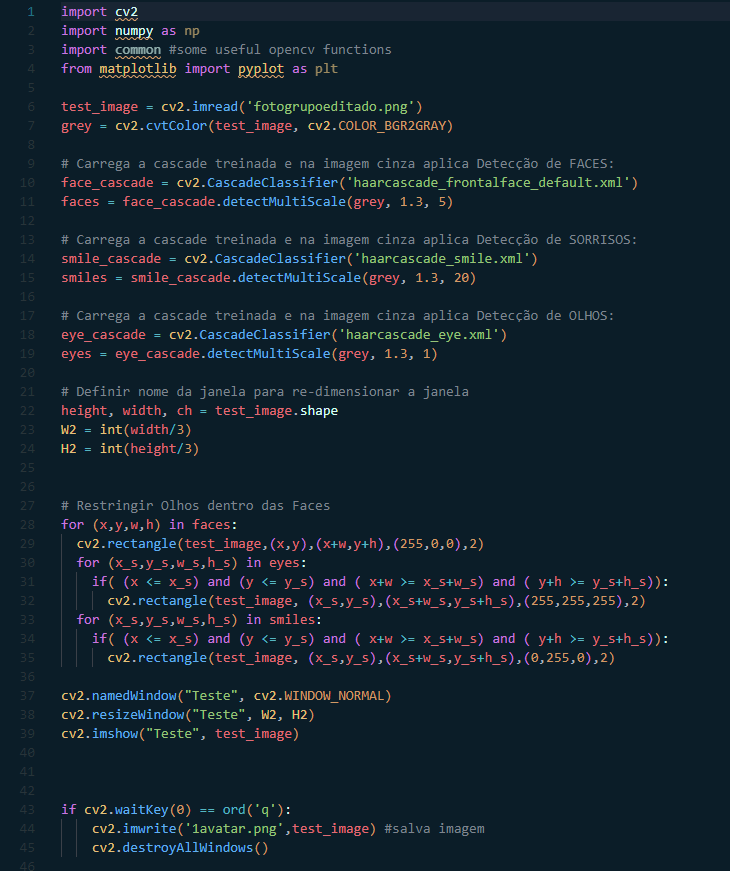
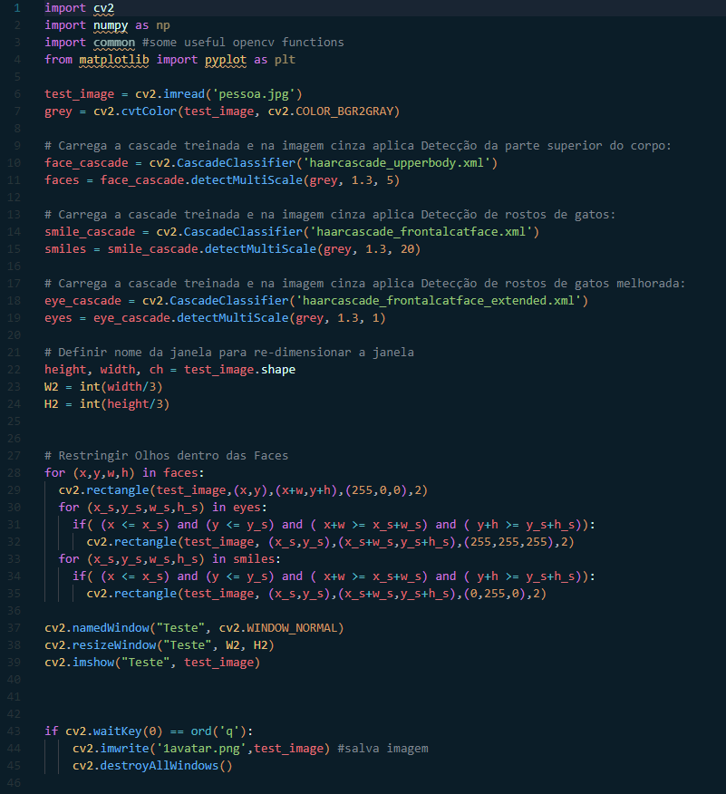
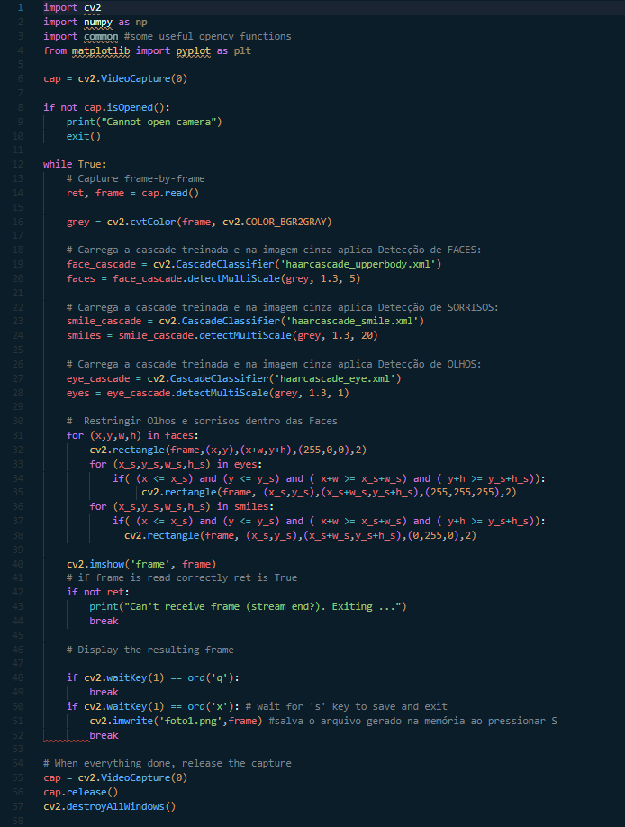
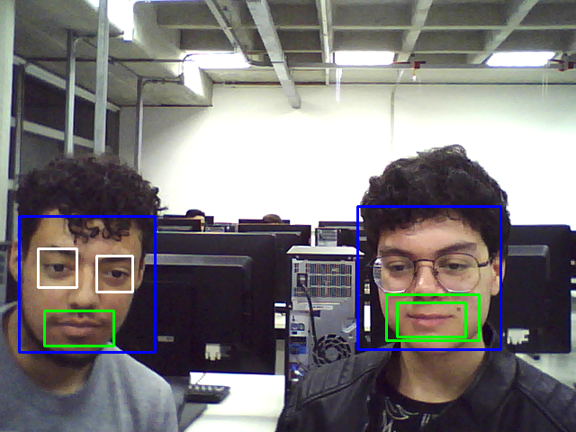
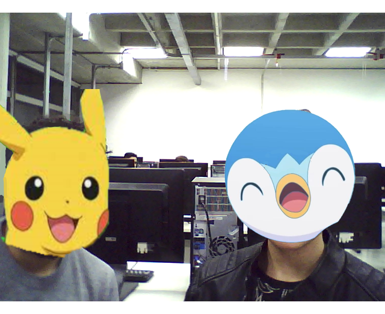
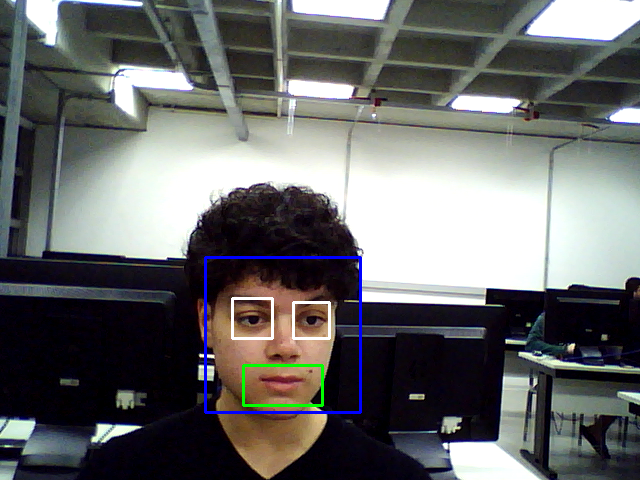

Introdução
O experimento a seguir busca estudar e explorar a teoria da detecção de objetos através de tutoriais do OpenCV e de aplicações práticas utilizando a biblioteca do mesmo.
Objetivos
- Compreender a teoria da detecção de objetos em OpenCV
- Aplicar o conhecimento na prática com OpenCV
- Experimentar outras funcionalidades
Fundamentos básicos
Um dos modos de se detectar objetos, disponível *aqui*, em OpenCv é através do método em cascata, que se baseia no aprendizado de máquina com imagens positivas e negativas sobre determinado objeto. Nesse método também são utilizados os recursos de Haar para detecção de features, visto no relatório anterior. Esse método também reduz a densidade de pixels na imagem para tornar os cálculos envolvendo as features menos custosas. Após isso, são selecionadas as características com menor texa de erro possível. Esse processo é repetido até que, no final, é realizada a somatória de todos os classificadores. Para otimizar o processo, a cascata de classificadores, onde, inicialmente, são aplicados os classificadores que gastam menos recursos para, caso uma determinada parte da imagem falhe, os recursos gastos sejam minímos. O OpenCV fornece um método de treinamento ou modelos pré-treinados, que podem ser lidos usando o método CascadeClassifier, onde um arquivo XML necessário é carregado usando o método CascadeClassifier.load. Por fim, a detecção é feita usando o método CascadeClassifier.detectMultiScale
O OpenCV também disponibiliza arquivos pré-treinados para a detecção de alguns tipos de objetos, como rostos, bocas e olhos, disponível *aqui*, junto com exemplos de como aplicar essa detecção em cascata e como juntá-las para detectar mais de um objeto de uma única vez.
Materiais e métodos
- Ubuntu
- Miniconda
- Python
- OpenCV
- Webcam
1)
Este abaixo se trata de um programa que realiza a leitura de uma imagem e detecta a face, olhos e bocas presentes nela. Após isso, os arquivos Xml são carregados e são aplicados para a detecção de cada atributo na mesma imagem. Em seguida, para cada atributo, também são criados retangulos que representarão a detecção desses atributos, sendo formados por um 'for' externo, que forma o rosto, e dois internos na mesma indentação que formam os olhos e bocas. Por último são utilizados os comandos básicos do OpenCV como imshow para mostrar a imagem final e imwrite para salvá-la.
Este abaixo se trata do mesmo programa da etapa anterior, porém, foram utilizados arquivos Xml diferentes para a detecção de torsos e rostos de gatos.
2)
Este abaixo se trata de um programa que realiza a leitura da webcam e realiza a detecção de objetos em tempo real, salvando um frame como imagem posteriormente. Foram utilizados comandos utilizados no terceiro algoritmo do relatório 1. Primeiro é criado uma variável (cap), que registra os frames capturados através do cv.videocapture e .read, depois, os arquivos Xml são carregados e são aplicados para a detecção de cada atributo nos frames, onde também são criados os retângulos para identificação. Após isso, são utilizados o comando imshow para mostrar os frames e imwrite para salvar um dos frames como imagem.
Resultados e análise
1)
Aqui está um exemplo de aplicação do primeiro programa com uma foto dos integrantes do grupo. É possível notar que, no primeiro rosto, todos os atribuitos foram detectados corretamente, o que não ocorre no segundo, onde os olhos não são detectados, provavelmente por conta dos óculos. Além da boca ter sido detectada duas vezes por algum motivo.
Já nos avatares, como esperado, não foram detectados nenhum dos atributos, já que se tratam de personagens que não apresentam traços semelhantes com os traços humanos.
2)
Aqui foi realizado o teste de captura em tempo real, com um dos integrantes desta vez sem os óculos. É possível notar que, sem os óculos, a detecção funcionou normalmente.
Conclusões e Comentários finais
Neste laboratório foram estudados conceitos muito interessantes sobre a detecção de objetos específicos em imagens. Este conceito pode ser muito útil para aplicações práticas como diferenciar peças para separação em uma fábrica, detecção de rostos humanos para sistemas de segurança, etc. Porém, é preciso possuir conhecimento para o machine learning e para a criação dos arquivos utilizados para a detecção dos objetos.